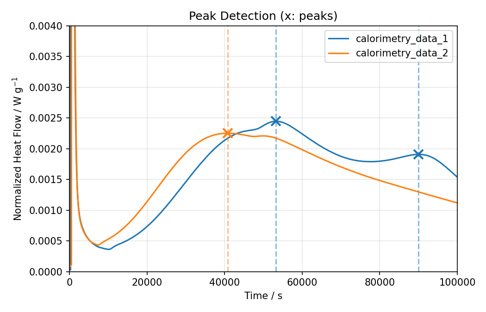
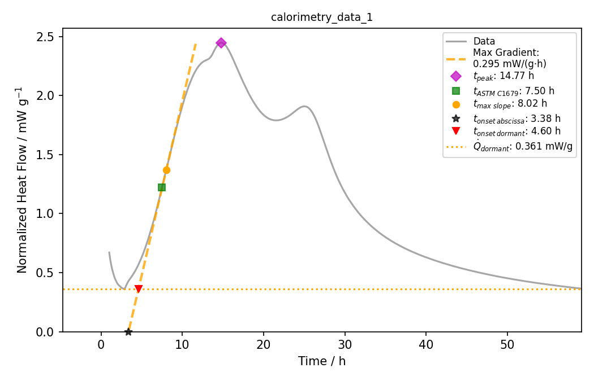
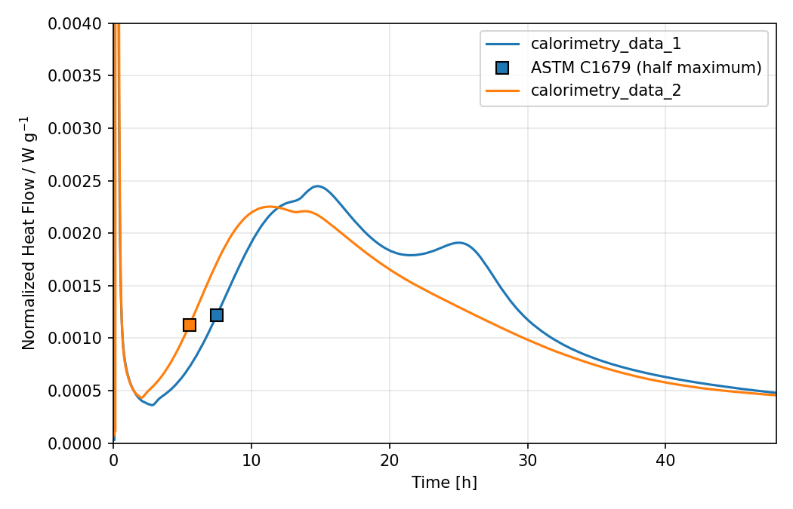

Characteristic Values¶
CaloCem extracts characteristic values from the heat flow curves. Every
method returns a pandas DataFrame with one row per sample (or per peak),
which can be saved with to_csv or merged with your metadata.
| Quantity | Method |
|---|---|
| Cumulative heat at a given age | get_cumulative_heat_at_hours |
| Heat released between two times, e.g. up to the onset | get_heat_between |
| Peaks (time, height, prominence) | get_peaks |
| Minimum heat flow of the dormant period | get_dormant_period_heatflow |
| Main hydration peak: slopes, onset, peak | get_mainpeak_params, see Main Peak Parameters |
| ASTM C1679 half-maximum point | get_astm_c1679_characteristics |
| Onset by gradient threshold | get_peak_onsets |
| Peak deconvolution | get_deconvolution |
All examples below assume a loaded Measurement and processing parameters:
from pathlib import Path
import matplotlib.pyplot as plt
from calocem import Measurement, ProcessingParameters
datapath = Path(__file__).parent / "calo_data"
tam = Measurement(folder=datapath, show_info=False)
processparams = ProcessingParameters()
Times are given in seconds, heat flows in W/g and heats in J/g.
Cumulative heat¶
processparams.cutoff.cutoff_min = 0
heat_24h = tam.get_cumulative_heat_at_hours(processparams, target_h=24)
The result has the columns sample, cumulative_heat_j_g (J/g),
target_h and cutoff_min.
Effect of the cutoff
The heat released before cutoff.cutoff_min is subtracted. With the
default cutoff of 60 min, the result is the heat released between 1 h
and target_h. Set cutoff_min = 0 to get the total heat since the
start of the measurement.
Renamed in 0.4.0
get_cumulative_heat_at_hours was called get_cumulated_heat_at_hours,
and cumulative_heat_j_g was called cumulated_heat_at_hours. The old
method and column still work but are deprecated.
Heat between two times¶
get_heat_between returns the heat released between start_s and end_s.
The cumulative heat is interpolated at both times, and the cutoff has no
effect. Each limit is either one time for all samples or one time per
sample, given as a dict or pd.Series keyed by sample_short. This way
you can integrate up to the onset of the main peak, which differs per
sample:
onsets = tam.get_mainpeak_params(processparams).set_index("sample_short")
heat_to_onset = tam.get_heat_between(
start_s=1800, # 30 min
end_s=onsets["onset_time_s_from_max_slope"],
)
The result has the columns sample, sample_short, start_s, end_s and
heat_j_g (J/g). Any other time column works as well, e.g.
onset_time_s_from_mean_slope, dorm_time_s or peak_time_s. The heat is
NaN if a sample has no time, a time lies outside the data, or end_s is
before start_s.
Peaks¶
Peaks are searched with
scipy.signal.find_peaks
after the cutoff. The peakdetection parameters control the sensitivity;
a smaller prominence finds smaller peaks.
processparams.cutoff.cutoff_min = 60
processparams.peakdetection.prominence = 1e-4
fig, ax = plt.subplots()
peaks = tam.get_peaks(processparams, show_plot=True, ax=ax)
ax.set_xlim(0, 100000)
ax.set_ylim(0, 0.004) # hide the initial heat flow spike
plt.show()

peaks contains the data row at each peak (time_s,
normalized_heat_flow_w_g, normalized_heat_j_g, ...) plus the
prominence and the number of the peak per sample (peak_nr, starting at
0). It can be exported, e.g.
peaks[["sample_short", "time_s", "normalized_heat_flow_w_g", "prominence"]].to_csv(
"peaks.csv", index=False
)
Note
show_plot defaults to True for get_peaks. Pass show_plot=False
when you only need the table.
Dormant period¶
The dormant (induction) period is characterized by the minimum heat flow between the cutoff and the first detected peak:
dormant = tam.get_dormant_period_heatflow(processparams)
Columns: dorm_time_s, normalized_heat_flow_w_g_dormant and
normalized_heat_j_g_dormant. Samples without a detected peak are missing
from the result.
Main hydration peak¶
The slopes of the main (silicate) peak and the onset of the acceleration
period are determined by get_mainpeak_params:
processparams.spline_interpolation.apply = True
processparams.spline_interpolation.smoothing_1st_deriv = 1e-13
processparams.plotting.time_unit = "hours"
processparams.plotting.heat_unit = "mW"
mainpeak = tam.get_mainpeak_params(processparams, show_plot=True, plot_type="max")

It combines
- the maximum slope: the maximum of the (smoothed) time derivative of the heat flow, with its time and value,
- the mean slope: a tangent averaged over the ascending flank of the main peak,
- the onset times, where these tangents intersect the dormant heat flow or the time axis,
- the dormant period and ASTM C1679 values described on this page.
Since the derivative of measured data is noisy, smoothing (see Processing Parameters) usually improves the maximum slope. Too much smoothing flattens the peak and underestimates the slope, so compare the tangent with the curve in the plot. The Main Peak Parameters tutorial explains all options and the returned columns.
get_maximum_slope and get_average_slope return only the maximum slope or
only the mean slope columns of the same analysis.
ASTM C1679¶
The standard ASTM C1679 characterizes the main peak by the time at which the heat flow reaches half of the peak maximum on the ascending flank:
fig, ax = plt.subplots()
astm = tam.get_astm_c1679_characteristics(
processparams, show_plot=True, xunit="h", ax=ax
)
ax.set_xlim(0, 48)
ax.set_ylim(0, 0.004)
plt.show()

Columns: astm_time_s, normalized_heat_flow_w_g_astm and
normalized_heat_j_g_astm. With individual=False, the half of the mean
peak height of all samples is used as common threshold.
Onset by gradient threshold¶
get_peak_onsets returns the first time at which the gradient of the heat
flow exceeds gradient_threshold (in W/g/s):
onsets = tam.get_peak_onsets(gradient_threshold=1e-8, rolling=10)
Note
This method does not use the processing parameters. Data before
time_discarded_s (default 900 s) is ignored instead of
cutoff.cutoff_min. The default gradient_threshold of 5e-4 W/g/s is
too high for typical cement pastes; values around 1e-8 W/g/s are a
better starting point.
Peak deconvolution¶
Overlapping reactions, e.g. the silicate and the aluminate peak, can be separated by fitting the heat flow after the cutoff as a sum of peaks plus a baseline:
processparams.cutoff.cutoff_min = 30
deconv = tam.get_deconvolution(
processparams,
n_peaks=2,
peak_shape="lognormal", # or "gaussian"
baseline_mode="constant", # "linear", "chebyshev" or "none"
show_plot=True,
)
The result has one row per fitted component with its amplitude (W/g),
peak_time_s, width, component_area (J/g) and component_area_fraction,
together with the fit quality (fit_r2, fit_rmse) and the baseline
coefficients. Fit settings are collected in the
deconvolution parameters.
Tip
Check the plot: a component with an amplitude close to zero means that
fewer peaks describe the data equally well. Its peak_time_s is then
meaningless.
get_left_peak_inflection_tangent_intersection uses the fit to determine an
onset of the first peak: the tangent at the inflection point of its left
flank is intersected with the time axis (x_intersection_abscissa_s). Pass
the result of get_deconvolution as deconvolution_results to avoid fitting
twice.